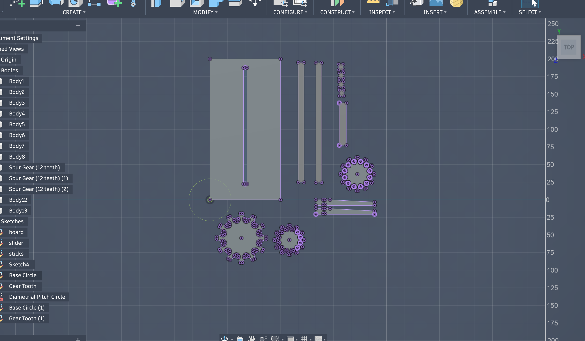
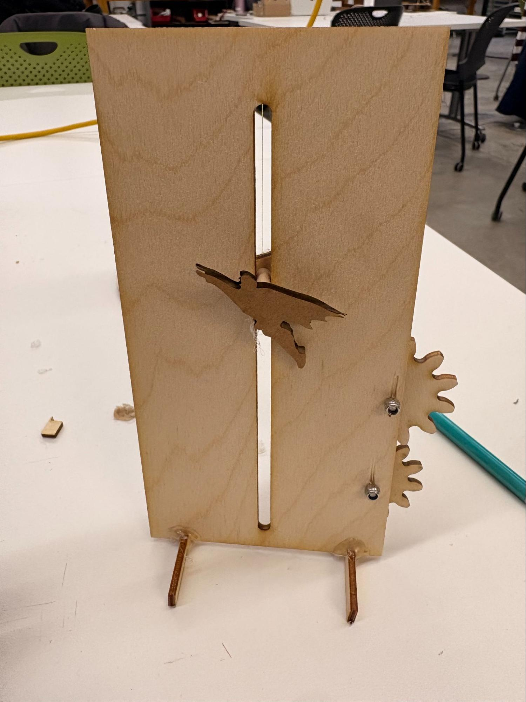
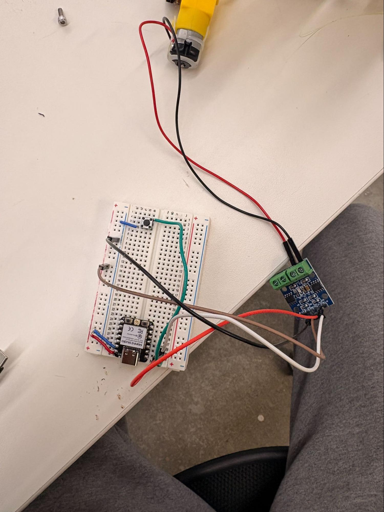
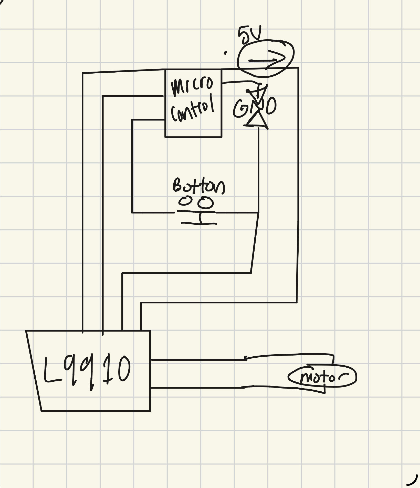

<div class="textcontainer">
<p class="margin"> </p>
<h3>Week 4: Microcontroller Programming</h3>
<h4>[Do Something with an arduino]</h4>
<video width="320" height="240"controls="" autoplay name="media">
<source src="IMG_6650.mp4" type="video/mp4;codecs="avc1.42E01E, mp4a.40.2"">
</video>
<p class="c2"><span class="c4">Overview</span></p>
<p class="c2 c8"><span class="c1">This week, I set out to make a new kinetic sculpture and incorporate a microcontroller to make a little game. The function is that from the first click of the button, you then have 3 seconds to press the button as many times as possible. The amount you press the button then determines how far up the wall the figure moves. </span></p>
<p class="c0"><span class="c1"></span></p>
<p class="c0"><span class="c1"></span></p>
<hr>
<p class="c0"><span class="c1"></span></p>
<p class="c0"><span class="c1"></span></p>
<p class="c2"><span class="c3">Code</span></p>
<p class="c2"><span class="c1">My code's main function is to read the state of the button, and when pushed, begin the three-second timer. </span></p>
<pre>
<code style = "color: white">
buttonState = digitalRead (buttonPin);
//reads last bounce time to see if it has changed and resets
if (buttonState != lastButtonState){
lastPressTime = millis();
}
//starts button reading process and leads to loop
if((millis() - lastPressTime) > pressDelay){
buttonState = digitalRead (buttonPin);
}
if (lastButtonState == HIGH && buttonState == LOW){
if (!timerOn){
timerOn = true;
startTime = millis();
numberOfButtonPress = 0;
Serial.println ("Counting started");
}
numberOfButtonPress++;
Serial.println("Number of presses: ");
Serial.println (numberOfButtonPress);
}
lastButtonState = digitalRead (buttonPin);
if(timerOn && (millis()- startTime >= timeLength)) {
Serial.print( "Total Button Presses: ");
Serial.println (numberOfButtonPress);
spinMotor(); //starts the motor spinning process
//this resets back to original
timerOn = false;
numberOfButtonPress = 0;
// need to add this when i figure out the spinmotor function
//need to also have it reset potentially
}
</code>
</pre>
<p class="c2"><span class="c5">After the first push, the code begins tracking the number of button presses. There is an <em>if</em> function checking to see if the timer is up, and when it reaches that point, the <em>spinMotor</em> function starts</span><span class="c1">. </span></p>
<p class="c2"><span class="c5">The <em>spinMotor</em> uses the number of button presses and multiples it by 100 to get the total number of milliseconds the motor is on. After the motor spins, the system resets, and the game can be played again. I am working on adding code to reverse the motor in the opposite direction so that the piece goes back to its starting position.</span></p>
<pre>
<code style = "color:white">
void spinMotor (){
int result;
result = numberOfButtonPress * 100;
Serial.print ("motor spinning time:");
Serial.println(result);
digitalWrite(motorPinA1A, LOW);
digitalWrite (motorPinA1B, HIGH);
Serial.print ("motor state:");
Serial.println(digitalRead(motorPinA1A));
//puts motor on
delay(result);
//keeps motor on for certain amount of time
digitalWrite(motorPinA1A, HIGH);
digitalWrite(motorPinA1B, HIGH);
//turns it off
Serial.println("Motor off.");
}
</code>
</pre>
<br>
<p class="c2"><span class="c3">Design</span></p>
<p class="c2"><span class="c1">Here are some photos of the design process:</span></p>
<p class="c2"><span class="c3">Design Images</span></p>

<br>

<br>

<br>

<video width="320" height="240"controls="" autoplay name="media">
<source src="IMG_6653.MOV" type="video/mp4;codecs="avc1.42E01E, mp4a.40.2"">
</video>
</div>